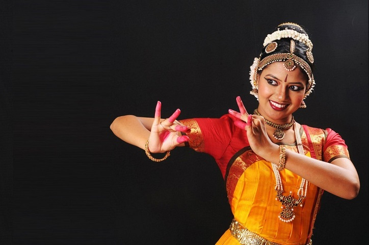

Tamilnadu
- Home
- Food

- Fashion

- Festival
- Float Festival
- Chennai Dance Music
- Meenakshi Kalyanam
Meenakshi Kalyanam
Meenakshi Kalyanam is truly one of the most popular festivals of Madurai that attracts visitors in large numbers, not only across India but from other counties as well. Meenakshi Kalyanam, Madurai is also one of the widely celebrated fairs and festivals in Tamil Nadu, India. The annual festival is celebrated every year at the world-famous Meenakshi Temple in Madurai in observance of the divine wedding of Goddess Meenakshi with Lord Sundareshwar (Shiva).

Chennai Dance Music
The Chennai Dance & Music Festival is the celebration of South Indian music and dance specially the Carnatic Music which is held in the city of Chennai. The festival is organized at a number of venues and is celebrated throughout Chennai especially for all the music lovers. This is truly a festival dedicated to South Indian Classical music and dance. - Meenakshi Kalyanam

Float Festival
One of the oldest cities of the country, Madurai is popularly known as the Temple Town of India. The history of Madurai dates back to the Sangam Period. Madurai has been ruled by many dynasties and undergone many social, cultural and political changes which has resulted in a fusion of varied traditions. The diversity that Madurai offers is evident in the rich cultural heritage.. - Chennai Dance Music
- Float Festival